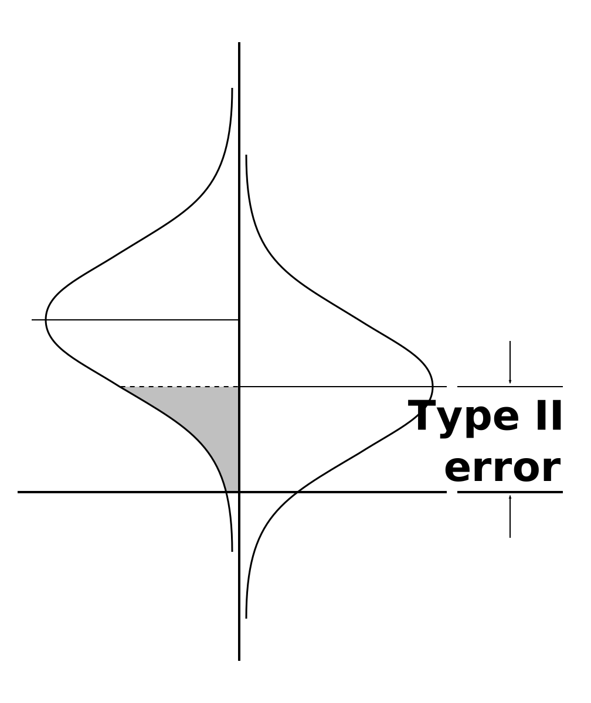
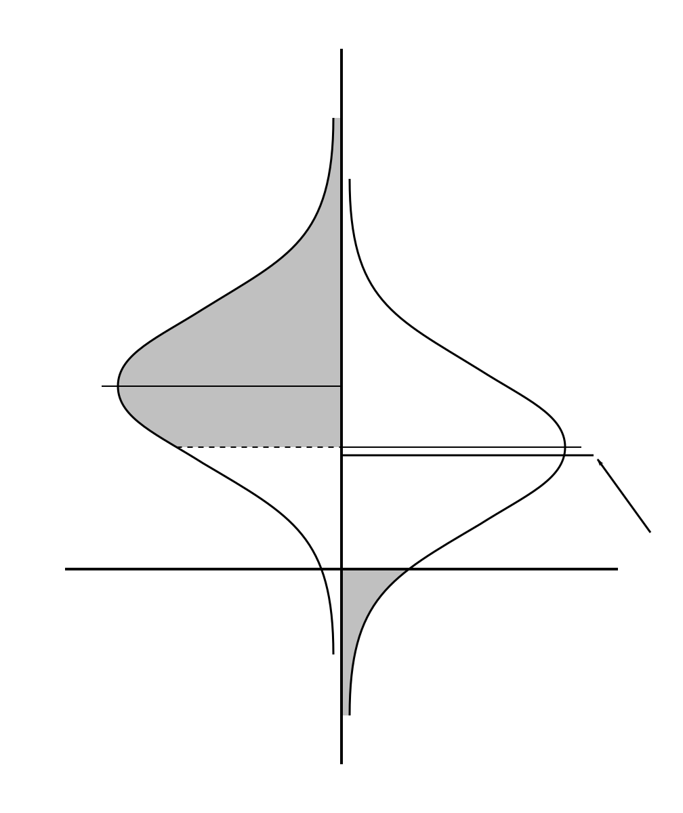

Why does alpha trump beta?
Statistical power or beta doesn't come up very often in humanities papers that involve null hypothesis significance testing. I believe that's because most researchers are fishing for results instead of testing specific hypothesis, but that's not the point at the moment. Without a consideration of the statistical power of an experiment, there can be no discussion made of Type II errors.

Figure 01
The example graphic (Figure 01) represents a Type II error. It shows a linear regression done at a 95% confidence level, that has a statistical power of 84%.
Remember that a Type II error is when a population correlation exists, but the sample fails to find it. So, in the example graphic, a Type II error would be any sample correlation that is below the minimum statistically significant correlation. Therefore, the area of the sample probability curve on the left side of the graphic that is shaded covers the sample correlations that would be a Type II error.
If your sample correlation is low enough that it would cross the shaded area on the left side of the graph, your result is not statistically significant. Which, I suspect, is the point when many researchers stop in the analysis of their data. Because sample correlations that are not significantly different from null are largely unpublishable. They are not viewed as ‘negative results’; rather, they're viewed as a non-results.
But is that appropriate? If you calculate a statistical power of 84%, and then you fail to get a statistically significant sample correlation, there is a 16% that you just have bad luck. But there's a 84% chance that there's something wrong with effect size you were expecting.
Is finding that your expected size of effect was wrong a useful result? That depends on how you went about coming up with your effect size. (It also assumes you did in fact consider statistical power in the design of your study, which often doesn't seem to be the case in humanities research.) In general, you probably estimated the expected effect size based on one of three things:
- The results of previous studies of the same correlation.
- The results of previous studies of similar correlations, combined with accept theories about the relation between those correlations and the one you're studying.
- An interpretation of what magnitude of result would qualify as “important”.
If you are doing a “replication study”, then you used the first approach. And when you failed to find a statistically significant result, that means that there's a 84% chance that those previous studies were wrong. That would seem to be worth further investigation, but is not something you see very often (if ever) in the humanities literature.
If you aren't doing a replication study, you likely used the second approach. So, when you failed to find a statistically significant result, per NHST, the implication is that either the previous related studies were wrong, or the accepted theories that relates those studies to yours are wrong. Again, while that seems like a potentially interesting result, you rarely see such a thing explored in the humanities literature.
Figure 02
In any of both of those cases, by not exploring the negative result, you are effectively saying that an 84% unlikelihood of a Type II error isn't compelling. Yet, a 95% percent unlikelihood of a Type I error is considered, not merely compelling, but definitive. (Compare figure 01 and figure 02.) So, if a 95% confidence level is enough to get a positive result it published, what's the required level of confidence in a negative result to get it published? There doesn't seem to be one. The utility of negative results from studies with large statistical power remains, as far as I know, largely unused.
But what about the third case? That's when you estimated your expected size of effect on an interpretation of what magnitude of result would qualify as “important”. That's discussed in the next section.
Checking for the wrong significance
If your linear regression fails to produce a correlation that's significantly different from null, does that mean you haven't found anything useful? Not necessarily. You may have simply stumbled into a Type II error, where your hypothesis is correct, but because of the inherent random error in a sampling process you failed to demonstrate that with statistically significant result.
But maybe the problem isn't with your hypothesis, or your data. Maybe the problem is that you're looking for the wrong statistical significance.

Figure 03
Figure 03 shows a statistical experiment with an alpha of 0.05, and a statistical power of 0.84. And the effect size used to calculated the statistical power was based on previous, similar studies.
The minimum correlation that is statistically significant is marked by the line that bisects the population probability curve on the right side of the graphic. Since you set alpha to 0.05, 5% of the area bounded by the population probability curve extends below the null line.
After you run such an experiment, you can end up with something like the next graphic, Figure 04. Everything is the same as the previous one, with the exception that a line marking the results of the analysis has been added (and is marked by an arrow). That line is below the line that marks the minimum statistically significant correlation, which means that result isn't large enough to qualify as statistically significant.

Figure 04
But is the result really statistically “insignificant”? It is under a null-hypothesis, but maybe that isn't the right hypothesis.
Let's move on to Figure 05, which has a number of things going on. The first thing to notice is that the population probability curve on the right side of the graphics is now centered on the result from the analysis. The dashed line under that curve that's just below and parallel to the null line is where that curve previous crossed the null line. It defines an area that 5% of the total area between the curve and the vertical baseline, and when it was directly on the null line, the line that bisected the curve marked the minimum correlation that was statistically significant.
But now that the population probability curve is centered on the sample result, we're more interested in the dashed line near the top of the curve. That dashed line is symmetric with the one near the null line, so it also marks of an area of 5%.
The line that previously marked the minimum correlation that would have been statistically significant has been moved up to align with the dashed line near the top of the curve. Now, instead of being interested in sample correlations that are above that line, we're going to be interested in population correlations that are below that line.
Why? Because we can say with a confidence of ‘p<.05’ that the the population being study has a correlation that is no higher than that line, based on our result.
Figure 05
So, another way to look at the results of an analysis that are not statistically significant compare to null, is to view them as defining an “upper bound” of statistical significance for the population correlation. Depends on what real-world phenomena your data is tracking, defining an upper bound for the population correlation might be a very useful thing.
So, for example, if your data is tracking the effectiveness of some new investment strategy by correlating its implementation to the change in overall returns, you might be able to determine the minimum positive impact required to make it worthwhile to use the new strategy. Whatever correlation matches to that impact becomes the minimum correlation that supports using the new strategy. In other words, that required minimum positive impact ends up defining an upper bound of correlation that the population correlation must surpass in order to demonstrate the importance of the new strategy.
Indeed, in a scenario such as that, a null-hypothesis significance test would be largely useless. If it wasn't readily apparent—or at least highly probable—that the new strategy would improve outcomes, no one would try it in the first place. So, that there will be an improvement is some sort is a foregone conclusion; what matters is the degree of the improvement. So, testing the sample correlation against null doesn't help you, because that's not the important question. What's important is using the sample correlation to determine if the population correlation is higher or lower than the minimum correlation that supports using the new strategy.
So, if a sample result isn't statistically significant compared to null, you should ask yourself, “Does that matter?” Even better would be questioning the use of a null-hypothesis significance test before you began gathering data and analyzing it in the first place. As part of the experimental design, you should find the significance hypothesis that is the best overall fit for both the goals of the study, and the data you're expecting to have.
Some of the issues involved with a employing an upper-bound significance test are discussed on Upper-bound significance testing.